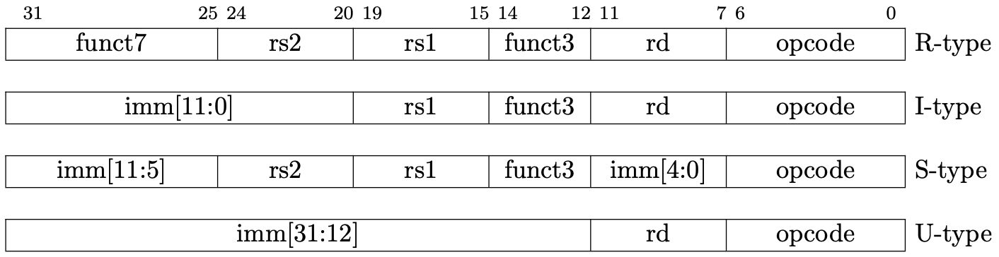

Writing a RISC-V Emulator in Rust
NOTE: This project is actively ongoing. Pages are not perfect and they can change soon.
Introduction
This is the book for writing a 64-bit RISC-V emulator from scratch in Rust. You can run xv6, a simple Unix-like OS, in your emulator once you finish the book.
You'll learn the basic computer architecture such as ISA, previleged architecture, exceptions, interrupts, peripheral devices, and virtual memory system from making an emulator.
The source code used in this book is available at d0iasm/rvemu-for-book.
Chapter 1
Chapter 1 shows all hardward components we need to implement for running xv6.
- CPU with Two Instructions
- Memory and System Bus
- Control and Status Registers
- Privileged Architecture
- Exceptions
- PLIC (a platform-level interrupt controller) and CLINT (a core-local interrupter)
- UART (a universal asynchronous receiver-transmitter)
- Interrupts
- Virtio
- Virtual Memory System
Chapter 2
Chapter 2 shows all ISAs we need to implement for running xv6.
- RV64I Base Integer Instruction Set
- "M" Standard Extension for Integer Multiplication and Division
- "A" Standard Extension for AtomicInstructions
Outcome
Once you read this book and implement the emulator, you will be able to run xv6 in your emulator!

Contact
The author is @d0iasm and please feel free to ask and request anything to me via Twitter or GitHub issues!
Hardware Components
Chapter 1 shows all hardward components we need to implement for running xv6.
- CPU with Two Instructions
- Memory and System Bus
- Control and Status Registers
- Privileged Architecture
- Exceptions
- PLIC (a platform-level interrupt controller) and CLINT (a core-local interrupter)
- UART (a universal asynchronous receiver-transmitter)
- Interrupts
- Virtio
- Virtual Memory System
CPU with Two Instructions
This is a part of the Writing a RISC-V Emulator in Rust. Our goal is running xv6, a small Unix-like OS, in your emulator in the final step.
The source code used in this page is available at d0iasm/rvemu-for-book/step01/.
The Goal of This Page
At the end of this page, we can implement a simple CPU and we can execute the sample file containing add and addi instructions in our emulator. The add instruction adds 64-bit values in two registers, and the addi instruction adds a 64-bit value in a register and a 12-bit immediate value.
Sample binary files are also available at d0iasm/rvemu-for-book/step01/. We successfully see the result of addition in the x31 register when we execute the sample binary file add-addi.bin.
// add-addi.bin contains the following instructions:
// main:
// . addi x29, x0, 5 // Add 5 and 0, and store the value to x29.
// . addi x30, x0, 37 // Add 37 and 0, and store the value to x30.
// . add x31, x30, x29 // x31 should contain 42 (0x2a).
$ cargo run add-addi.bin
...
x28=0x0 x29=0x5 x30=0x25 x31=0x2a
Background
RISC-V is a new instruction-set architecture (ISA) that was originally designed to support computer architecture research and education at the University of California, Berkeley, but now it gradually becomes a standard free and open architecture for industry implementations. RISC-V is also excellent for students to learn computer architecture since it's simple enough. We can read the RISC-V specifications for free and we'll implement a part of features in Volume I: Unprivileged ISA and Volume II: Privileged Architecture. The Unprivileged ISA defines instructions, the binary that the computer processor (CPU) can understand. Currently, RISC-V defines 32-bit and 64-bit architecture. The width of registers and the available memory size is different depending on the architecture. The 128-bit architecture also exists but it is currently in a draft state.
Rust is an open-source systems programming language that focuses on performance and safety. It is popular especially in systems programming like an operating system. We're going to implement our emulator in Rust.
An emulator is, in simple words, an infinite loop to execute a RISC-V binary one by one unless something wrong happens or a user stops an emulator explicitly. In this book, we try to understand the basic RISC-V architecture by making a RISC-V emulator.
RISC-V ISA
RISC-V ISA consists of modules, a base integer ISA plus optional extensions. The base integer ISA must be implemented in any platform. There are 2 variants in the base integer ISA, RV32I in a 32-bit architecture and RV64I in a 64-bit architecture.
The base integer ISA only contains simple integer arithmetic operations so it's not enough so that it can't run complex systems such as OSes. RISC-V defines a combination of a base ISA plus selected extensions as a "general-purpose" ISA, called RV32G or RV64G, to allow complex systems to run on RISC-V hardware.
Here is the list of ISAs that RV64G includes:
- RV64I: base integer instructions
- RV64M: integer multiplication and division instructions
- RV64A: atomic instructions
- RV64F: single-precision floating-point instructions
- RV64D: double-precision floating-point instructions
- RVZicsr: control and status register instructions
- RVZifencei: instruction-fetch fence instructions
We'll only support the instructions that xv6 uses which are RV64I, RVZicsr, a part of RV64M, and a part of RV64A.
Build RISC-V Toolchain
First, we need to build a RISC-V toolchain for RV64G. The default toolchain will use RV64GC which contains a general-purpose ISA and a compressed ISA. However, we will not support the compressed ISA in our emulator so we need to tell the architecture we use to the toolchain.
Download code from the riscv/riscv-gnu-toolchain repository and configure it with RV64G architecture. After executing the following commands, we can use riscv64-unknown-elf-* commands.
$ git clone --recursive https://github.com/riscv/riscv-gnu-toolchain
$ cd riscv-gnu-toolchain
$ ./configure --prefix=<path-to-riscv-toolchain> --with-arch=rv64g
$ make && make linux
// Now we can use riscv64-unknown-elf-* commands!
Create a New Project
We'll use Cargo, the Rust package manager. See the installation page in the Cargo book to install it. I'll call our project rvemu-for-book because I originally implemented rvemu and I refactored the code for this book.
The command cargo new can make a new project. We can see "Hello, world!" when we execute an initialized project by cargo run.
$ cargo new rvemu-for-book
$ cd rvemu-for-book
$ cargo run
Hello, world!
Create a Basic CPU
CPU is the most important part of a computer to execute instructions. It has registers, a small amount of fast storage that a CPU can access. The width of registers is 64 bits in the 64-bit RISC-V architecture. It also has a program counter to hold the address of the current instruction.
The following struct contains 32 registers, a program counter, and memory. Actual hardware doesn't have a memory inside a CPU and the memory connects to the CPU via a system bus. We will make a memory and system bus module on the next page, and we create a CPU that contains a memory directly for now.
{% code title="src/main.rs" %}
#![allow(unused)] fn main() { struct Cpu { regs: [u64; 32], pc: u64, memory: Vec<u8>, } }
{% endcode %}
Registers
There are 32 general-purpose registers that are each 64 bits wide in RV64I. Each register has a role defined by the integer register convention. Basically, an emulator doesn't care about the roles of a register except zero (x0) and sp (x2) registers. The zero register x0 is hardwired with all bits equal to 0. The sp register x2 is a stack pointer. A stack is a data structure mainly located at the end of the address space. It is especially used to store local variables. A stack pointer keeps track of a stack. A value of a stack pointer is subtracted in a function prologue, so we need to set it up with a non-0 value.
#![allow(unused)] fn main() { // Set the register x2 with the size of a memory when a CPU is // instantiated. regs[2] = MEMORY_SIZE; // 1024 * 1024 * 128 (128MiB). // Reset the value of register x0 with 0 in each cycle to mimic that // register x0 is hardwired with all bits equal to 0. self.regs[0] = 0; }
Fetch-decode-execute Cycle
The main job of the CPU is composed of three main stages: fetch stage, decode stage, and execute stage. The fetch-decode-execute cycle is also known as the instruction cycle. A CPU follows the cycle from the computer boots up until it shuts down.
- Fetch: Reads the next instruction to be executed from the memory where the program is stored.
- Decode: Splits an instruction sequence into a form that makes sense to the CPU.
- Execute: Performs the action required by the instruction.
Also, we need to add 4 bytes, the size of one instruction, to the program counter in each cycle.
{% code title="src/main.rs" %}
fn main() -> io::Result<()> { ... while cpu.pc < cpu.memory.len() as u64 { // 1. Fetch. let inst = cpu.fetch(); // 2. Add 4 to the program counter. cpu.pc = cpu.pc + 4; // 3. Decode. // 4. Execute. cpu.execute(inst); } ...
{% endcode %}
We'll make fetch and execute methods in CPU. The decode stage is performed in the execute method for the sake of simplicity.
{% code title="src.main.rs" %}
#![allow(unused)] fn main() { impl Cpu { fn fetch(&self) -> u32 { // Read 32-bit instruction from a memory. } fn execute(&mut self, inst: u32) { // Decode an instruction and execute it. } } }
{% endcode %}
Set Binary Data to the Memory
In order to implement the fetch method, we need to read a binary file from a command line and store the content in the memory. We can get command-line arguments via the standard env module. Let a file name place at the first argument.
The binary is set up to the memory when a new CPU instance is created.
{% code title="src/main.rs" %}
use std::env; fn main() -> io::Result<()> { let args: Vec<String> = env::args().collect(); if args.len() != 2 { panic!("Usage: rvemu-simple <filename>"); } let mut file = File::open(&args[1])?; let mut binary = Vec::new(); file.read_to_end(&mut binary)?; let cpu = Cpu::new(binary); ... } impl Cpu { fn new(binary: Vec<u8>) -> Self { Self { regs: [0; 32], pc: 0, memory: binary, } } fn fetch(&self) -> u32 { ... } fn execute(&mut self, inst: u32) { ... } }
{% endcode %}
Fetch Stage
Now, we are ready to fetch an instruction from the memory.
What we should be careful to fetch an instruction is endianness, which is the term refers to how binary data is stored. There are 2 types of endianness: little-endian and big-endian. A little-endian ordering places the least significant byte (LSB) at the lowest address and the most significant byte (MSB) places at the highest address in a 32-bit word. While a big-endian ordering does the opposite.

RISC-V has either little-endian or big-endian byte order. Our emulator only supports a little-endian system because RISC-V originally chose little-endian byte ordering and it's currently dominant commercially like x86 systems.
Our memory is the vector of u8 , so read 4 elements from the memory and shift them in the little-endian ordering.
{% code title="src/main.rs" %}
#![allow(unused)] fn main() { impl Cpu { ... fn fetch(&self) -> u32 { let index = self.pc as usize; return (self.memory[index] as u32) | ((self.memory[index + 1] as u32) << 8) | ((self.memory[index + 2] as u32) << 16) | ((self.memory[index + 3] as u32) << 24); } ... } }
{% endcode %}
Decode State
RISC-V base instructions only have 4 instruction formats and a few variants as we can see in Fig 1.2. These formats keep all register specifiers at the same position in all formats since it makes it easier to decode.

Decoding for common parts in all formats is performed by bitwise operations, bit shifts and bitwise ANDs.
{% code title="src/main.rs" %}
#![allow(unused)] fn main() { impl Cpu { ... fn execute(&mut self, inst: u32) { let opcode = inst & 0x7f; let rd = ((inst >> 7) & 0x1f) as usize; let rs1 = ((inst >> 15) & 0x1f) as usize; let rs2 = ((inst >> 20) & 0x1f) as usize; ... }
{% endcode %}
Execute State
As a first step, we're going to implement 2 instructions add (R-type) and addi (I-type). The add instruction adds 64-bit values in two registers, and the addi instruction adds a 64-bit value in a register and a 12-bit immediate value. We can dispatch an execution depending on the opcode field according to Fig 1.3 and Fig 1.4. In the addi instruction, we need to decode 12-bit immediate which is sign-extended.


{% code title="src/main.rs" %}
#![allow(unused)] fn main() { impl Cpu { ... match opcode { 0x13 => { // addi let imm = ((inst & 0xfff00000) as i32 as i64 >> 20) as u64; self.regs[rd] = self.regs[rs1].wrapping_add(imm); } 0x33 => { // add self.regs[rd] = self.regs[rs1].wrapping_add(self.regs[rs2]); } _ => { dbg!("not implemented yet"); } } } } }
{% endcode %}
The reason for using wrapping_add instead of plus (+) operation is to avoid causing an arithmetic overflow when the result is beyond the boundary of the type of registers which is a 64-bit unsigned integer.
Testing
We're going to test 2 instructions by executing a sample file and check if the registers are expected values. I prepared a sample binary file available at d0iasm/rvemu-for-book/step01/. Download the add-addi.bin file and execute it in your emulator.
To see the registers after execution is done, I added the dump_registers function. Now, we successfully see the result of the addition in the x31 register when we execute the sample binary file.
// add-addi.bin is binary to execute these instructions:
// main:
// . addi x29, x0, 5 // Add 5 and 0, and store the value to x29.
// . addi x30, x0, 37 // Add 37 and 0, and store the value to x30.
// . add x31, x30, x29 // x31 should contain 42 (0x2a).
$ cargo run add-addi.bin
...
x28=0x0 x29=0x5 x30=0x25 x31=0x2a
How to Build Test Binary
Our emulator can execute an ELF binary without any headers and its entry point address is 0x0 . The Makefile helps you build test binary.
$ riscv64-unknown-elf-gcc -Wl,-Ttext=0x0 -nostdlib -o foo foo.s
$ riscv64-unknown-elf-objcopy -O binary foo foo.bin
Disclaimer
The sample file doesn't cover edge cases (e.g. arithmetic overflow). We'll not aim at the perfect implementation of our emulator in this step and in the following steps because it costs too much. The book just focuses on running xv6 in our emulator and its implementation is possibly wrong or not enough.
Memory and System Bus
This is a part of the Writing a RISC-V Emulator in Rust. Our goal is running xv6, a small Unix-like OS, in your emulator in the final step.
The source code used in this page is available at d0iasm/rvemu-for-book/step02/.
Goal of This Page
At the end of this page, we can implement memory and system bus. The memory is a dynamic random-access memory (DRAM) to store data while executing a program. The system bus is a pathway to carry data between the CPU and the memory.
CPU Module
First, we're going to divide the implementation of the CPU from the main.rs file. Rust provides a module system to split code into logical units and organize visibility. We're going to move the implementation of CPU to a new file cpu.rs.
In order to define a cpu module we need to mod keyword at the beginning of the main file. Also use keyword allows us to use public items in the cpu module.
{% code title="src/main.rs" %}
#![allow(unused)] fn main() { // This declaration will look for a file named `cpu.rs` or `cpu/mod.rs` and will // insert its contents inside a module named `cpu` under this scope. mod cpu; // Use all public structures, methods, and functions defined in the cpu module. use crate::cpu::*; }
{% endcode %}
{% code title="src/cpu.rs" %}
#![allow(unused)] fn main() { // `pub` keyword allows other modules use the `Cpu` structure and methods // relating to it. pub struct Cpu { ... } impl Cpu { ... } }
{% endcode %}
Fetch-decode-execute Cycle
The previous step already mentioned the fetch-decode-execute cycle and we're going to implement it in the main.rs. An emulator is ideally an infinite loop and executes the program infinitely unless something wrong happens or a user stops an emulator explicitly. However, we're going to stop an emulator implicitly when the program counter is 0 or over the length of memory, and an error happens during the execution.
{% code title="src/main.rs" %}
fn main() -> io::Result<()> { ... while cpu.pc < cpu.memory.len() as u64 { // 1. Fetch let inst = cpu.fetch(); // 2. Add 4 to the program counter. cpu.pc += 4; // 3. Decode. // 4. Execute. match cpu.execute(inst) { // True if an error happens. true => break, false => {} }; // This is a workaround for avoiding an infinite loop. if cpu.pc == 0 { break; } } ... }
{% endcode %}
Fetch Stage
The fetch stage is basically the same as the previous step, but I prefer to create a new function to read 32-bit data from a memory because there are other instructions to read and write memory.
{% code title="src/cpu.rs" %}
#![allow(unused)] fn main() { impl Cpu { ... fn read32(&self, addr: u64) -> u64 { let index = addr as usize; return (self.memory[index] as u64) | ((self.memory[index + 1] as u64) << 8) | ((self.memory[index + 2] as u64) << 16) | ((self.memory[index + 3] as u64) << 24); } ... pub fn fetch(&self) -> u32 { return self.read32(self.pc) as u32; } ... } }
{% endcode %}
Decode Stage
The decode stage is almost the same as the previous step too and we'll add 2 new fields funct3 and funct7. funct3 is located from 12 to 14 bits and funct7 is located from 25 to 31 bits as we can see in Fig 2.1 and 2.2. These fields and opcode select the type of operation.
{% code title="src/cpu.rs" %}
#![allow(unused)] fn main() { impl Cpu { ... fn execute(&mut self, inst: u32) { ... let funct3 = (inst & 0x00007000) >> 12; let funct7 = (inst & 0xfe000000) >> 25; ... }
{% endcode %}
In RISC-V, there are many common positions in all formats, but decoding an immediate value is quite different depending on instructions, so we'll decode an immediate value in each operation.
For example, the immediate value in branch instructions is located in the place of rd and funct7. A branch instruction is a if statement in C to change the sequence of instruction execution depending on a condition, which includes beq, bne, blt, bge, bltu, and bgeu.
Decoding is performed by bitwise ANDs and bit shifts. The point to be noted is that an immediate value should be sign-extended. It means we need to fill in the upper bits with 1 when the significant bit is 1. In this implementation, filling in bits with 1 is performed by casting from a signed integer to an unsigned integer.
The way how to decode each instruction is listed in Fig 2.1 and Fig 2.2.
{% code title="src/cpu.rs" %}
#![allow(unused)] fn main() { impl Cpu { ... fn execute(&mut self, inst: u32) { ... match opcode { 0x63 => { // imm[12|10:5|4:1|11] = inst[31|30:25|11:8|7] let imm = (((inst & 0x80000000) as i32 as i64 >> 19) as u64) | ((inst & 0x80) << 4) // imm[11] | ((inst >> 20) & 0x7e0) // imm[10:5] | ((inst >> 7) & 0x1e); // imm[4:1] match funct3 { ... }
{% endcode %}
Execute Stage
Each operation is performed in each match arm. For example, a branch instruction beq, which is one of the branch instructions, is executed when opcode is 0x63 and funct3 is 0x0. beq sets the pc to the current pc plus the signed-extended offset if a value in rs1 equals a value in rs2. The current pc means the position when CPU fetched an instruction from memory so we need to subtract 4 from pc because we added 4 after fetch.
{% code title="src/cpu.rs" %}
#![allow(unused)] fn main() { impl Cpu { ... fn execute(&mut self, inst: u32) { ... match opcode { 0x63 => { let imm = ...; match funct3 { 0x0 => { // beq if self.regs[rs1] == self.regs[rs2] { self.pc = self.pc.wrapping_add(imm).wrapping_sub(4); } } ... }
{% endcode %}
Memory Module
// TODO: write this section
System Bus Module
// TODO: write this section
Instructions List
The following table is a brief explanation for each instruction. The book won't describe the details of each instruction but will indicate points to be noted when you implement instructions. In addition, you can see the implementation in d0iasm/rvemu-for-book/step02/src/cpu.rs and description in Chapter 2 RV32I Base Integer Instruction Set and Chapter 5 RV64I Base Integer Instruction Set in the unprivileged specification.
Points to be noted:
- Arithmetic operations are done by wrapping_* functions to avoid an overflow.
- Sign-extended is done by casting from a smaller signed integer to a larger signed integer.
- The amount for 64-bit shift operations is encoded in the lower 6 bits in an immediate, and the amount for 32-bit shift operations is encoded in the lower 5 bits.
| Instruction | Pseudocode | Description |
|---|---|---|
| lui rd, imm | x[rd] = sext(imm[31:12] << 12) | Load upper immediate value. |
| auipc rd, imm | x[rd] = pc + sext(imm[31:12] << 12) | Add upper immediate value to PC. |
| jal rd, offset | x[rd] = pc + 4; pc += sext(offset) | Jump and link. |
| jalr rd, offset(rs1) | t = pc+4; pc = (x[rs1] + sext(offset)&~1); x[rd] = t | Jump and link register. |
| beq rs1, rs2, offset | if (rs1 == rs2) pc += sext(offset) | Branch if equal. |
| bne rs1, rs2, offset | if (rs1 != rs2) pc += sext(offset) | Branch if not equal. |
| blt rs1, rs2, offset | if (rs1 < rs2) pc += sext(offset) | Branch if less than. |
| bge rs1, rs2, offset | if (rs1 >= rs2) pc += sext(offset) | Branch if greater than or equal. |
| bltu rs1, rs2, offset | if (rs1 < rs2) pc += sext(offset) | Branch if less than, unsigned. |
| bgeu rs1, rs2, offset | if (rs1 >= rs2) pc += sext(offset) | Branch if greater than or equal, unsigned. |
| lb rd, offset(rs1) | x[rd] = sext(M[x[rs1] + sext(offset)][7:0]) | Load byte (8 bits). |
| lh rd, offset(rs1) | x[rd] = sext(M[x[rs1] + sext(offset)][15:0]) | Load halfword (16 bits). |
| lw rd, offset(rs1) | x[rd] = sext(M[x[rs1] + sext(offset)][31:0]) | Load word (32 bits). |
| lbu rd, offset(rs1) | x[rd] = M[x[rs1] + sext(offset)][7:0] | Load byte, unsigned. |
| lhu rd, offset(rs1) | x[rd] = M[x[rs1] + sext(offset)][15:0] | Load halfword, unsigned. |
| sb rs2, offset(rs1) | M[x[rs1] + sext(offset)] = x[rs2][7:0] | Store byte. |
| sh rs2, offset(rs1) | M[x[rs1] + sext(offset)] = x[rs2][15:0] | Store halfword. |
| sw rs2, offset(rs1) | M[x[rs1] + sext(offset)] = x[rs2][31:0] | Store word. |
| addi rd, rs1, imm | x[rd] = x[rs1] + sext(imm) | Add immediate. |
| slti rd, rs1, imm | x[rd] = x[rs1] < x[rs2] | Set if less than. |
| sltiu rd, rs1, imm | x[rd] = x[rs1] < x[rs2] | Set if less than, unsigned. |
| xori rd, rs1, imm | x[rd] = x[rs1] ^ sext(imm) | Exclusive OR immediate. |
| ori rd, rs1, imm | x[rd] = x[rs1] | sext(imm) | OR immediate. |
| andi rd, rs1, imm | x[rd] = x[rs1] & sext(imm) | AND immediate. |
| slli rd, rs1, shamt | x[rd] = x[rs1] << shamt | Shift left logical immediate. |
| srli rd, rs1, shamt | x[rd] = x[rs1] >> shamt | Shift right logical immediate. |
| srai rd, rs1, shamt | x[rd] = x[rs1] >> shamt | Shift right arithmetic immediate. |
| add rd, rs1, rs2 | x[rd] = x[rs1] + x[rs2] | Add. |
| sub rd, rs1, rs2 | x[rd] = x[rs1] - x[rs2] | Subtract. |
| sll rs, rs1, rs2 | x[rd] = x[rs1] << x[rs2] | Shift left logical. |
| slt rd, rs1, rs2 | x[rd] = x[rs1] < x[rs2] | Set if less than. |
| sltu rd, rs1, rs2 | x[rd] = x[rs1] < x[rs2] | Set if less than, unsigned. |
| xor rd, rs1, rs2 | x[rd] = x[rs1] ^ x[rs2] | Exclusive OR. |
| srl rd, rs1, rs2 | x[rd] = x[rs1] >> x[rs2] | Shift right logical. |
| sra rd, rs1, rs2 | x[rd] = x[rs1] >> x[rs2] | Shift right arithmetic. |
| or rd, rs1, rs2 | x[rd] = x[rs1] | x[rs2] | OR. |
| and rd, rs1, rs2 | x[rd] = x[rs1] & x[rs2] | AND. |
| lwu rd, offset(rs1) | x[rd] = M[x[rs1] + sext(offset)][31:0] | Load word, unsigned. |
| ld rd, offset(rs1) | x[rd] = M[x[rs1] + sext(offset)][63:0] | Load doubleword (64 bits), unsigned. |
| sd rs2, offset(rs1) | M[x[rs1] + sext(offset)] = x[rs2][63:0] | Store doubleword. |
| addiw rd, rs1, imm | x[rd] = sext((x[rs1] + sext(imm))[31:0]) | Add word immediate. |
| slliw rd, rs1, shamt | x[rd] = sext((x[rs1] << shamt)[31:0]) | Shift left logical word immediate. |
| srliw rd, rs1, shamt | x[rd] = sext((x[rs1] >> shamt)[31:0]) | Shift right logical word immediate. |
| sraiw rd, rs1, shamt | x[rd] = sext((x[rs1] >> shamt)[31:0]) | Shift right arithmetic word immediate. |
| addw rd, rs1, rs2 | x[rd] = sext((x[rs1] + x[rs2])[31:0]) | Add word. |
| subw rd, rs1, rs2 | x[rd] = sext((x[rs1] - x[rs2])[31:0]) | Subtract word. |
| sllw rd, rs1, rs2 | x[rd] = sext((x[rs1] << x[rs2][4:0])[31:0]) | Shift left logical word. |
| srlw rd, rs1, rs2 | x[rd] = sext(x[rs1][31:0] << x[rs2][4:0]) | Shift right logical word. |
| sraw rd, rs1, rs2 | x[rd] = sext(x[rs1][31:0] << x[rs2][4:0]) | Shift right arithmetic word. |
Testing
We're going to test instructions we implemented in this step by calculating a Fibonacci number and check if the registers are expected values. I prepared a sample binary file available at d0iasm/rvemu-for-book/step02/. Download the fib.bin file and execute it in your emulator.
Calculating a Fibonacci number is actually not enough to test all RV64I instructions, so it perhaps be better to use riscv/riscv-tests to make sure if your implementation is correct. However, it's not obvious how to use riscv-tests so I'll skip to use the test in this book for the sake of simplicity. If you are interested in using riscv-tests, the test file in rvemu may be helpful.
// fib.c contains the following C code and fib.bin is the build result of it:
// int fib(int n);
// int main() {
// return fib(10); // Calculate the 10th fibonacci number.
// }
// int fib(int n) {
// if (n == 0 || n == 1)
// return n;
// else
// return (fib(n-1) + fib(n-2));
// }
$ cargo run fib.bin
...
x12=0x0 x13=0x0 x14=0x1 x15=0x37 // x15 should contain 55 (= 10th fibonacci number).
How to Build Test Binary
If you want to execute a bare-metal C program you write, you need to make an ELF binary without any headers because our emulator just starts to execute at the address 0x0 . The Makefile helps you build a test binary.
$ riscv64-unknown-elf-gcc -S fib.c
$ riscv64-unknown-elf-gcc -Wl,-Ttext=0x0 -nostdlib -o fib fib.s
$ riscv64-unknown-elf-objcopy -O binary fib fib.bin
Control and Status Registers
This is step 3 of the book Writing a RISC-V Emulator from Scratch in 10 Steps, whose goal is running xv6, a small Unix-like OS, in your emulator in the final step.
The source code is available at d0iasm/rvemu-for-book/step03/.
Goal of This Page
In the end of this page, we can execute the sample file containing CSR instructions, csrrw, csrrs, csrrc, csrrwi, csrrsi, and csrrci.
Control and Status Registers (CSRs)
Control and status register (CSR) is a register that stores various information in CPU. RISC-V defines a separate address space of 4096 CSRs associated with each hardware thread so we can have at most 4096 CSRs. RISC-V only allocates a part of address space so we can add custom CSRs if we want. Also, not all CSRs are required on all implementations. In this book, I'll describe only CSRs used in xv6-riscv.
First, we're going to add csrs field to Cpu structure. We already defined registers, a program counter, and memory and now we have 4 fields in CPU.
{% code title="src/cpu.rs" %}
#![allow(unused)] fn main() { pub struct Cpu { /// 32 64-bit integer registers. pub regs: [u64; 32], /// Program counter to hold the the memory address of the next instruction that would be executed. pub pc: u64, /// Control and status registers. RISC-V ISA sets aside a 12-bit encoding space (csr[11:0]) for /// up to 4096 CSRs. pub csrs: [u64; 4096], /// Computer memory to store executable instructions and the stack region. pub memory: Vec<u8>, } }
{% endcode %}
CSR Instructions
Fig 3.4 is the list for instructions to read-modify-write CSRs. RISC-V calls the 6 instructions Zicsr. CSR specifier is encoded in the 12-bit csr field of the instruction held in bits 31–20. There are 12 bits for specifying which CSR is selected so it means we have 4096 CSRs (=2**12). The uimm field is unsigned immediate value, a 5-bit zero-extended.

CSR List
Fig 3.1-3.3 list the CSRs that are currently allocated CSR addresses.


Testing
Privileged Architecture
This is step 4 of the book Writing a RISC-V Emulator from Scratch in 10 Steps, whose goal is running xv6, a small Unix-like OS, in your emulator in the final step.
The source code is available at d0iasm/rvemu-for-book/step04/.
Goal of This Page
In the end of this page, we can execute the part of supervisor ISA, mret and sret. These instructions are used to return from traps in M-mode, S-mode, or U-mode respectively. In addition, we'll add sfence.vma but we don't do anything for now.
Privilege Levels
Testing
Exceptions
This is step 5 of the book Writing a RISC-V Emulator from Scratch in 10 Steps, whose goal is running xv6, a small Unix-like OS, in your emulator in the final step.
The source code is available at d0iasm/rvemu-for-book/step05/.
Goal of This Page
In the end of this page, we support exceptions and can execute ecall, ebreak and fence, parts of the base integer instruction set (RV64I). The ecall and ebreak instructions raise an exception.
Exceptions
Testing
PLIC (a platform-level interrupt controller) and CLINT (a core-local interrupter)
This is step 6 of the book Writing a RISC-V Emulator from Scratch in 10 Steps, whose goal is running xv6, a small Unix-like OS, in your emulator in the final step.
The source code is available at d0iasm/rvemu-for-book/step06/.
Goal of This Page
In the end of this page, we can support a platform-level interrupt controller (PLIC) and a core-local interrupter (CLINT) as CPU's peripheral devices.
Testing
UART (a universal asynchronous receiver-transmitter)
This is step 7 of the book Writing a RISC-V Emulator from Scratch in 10 Steps, whose goal is running xv6, a small Unix-like OS, in your emulator in the final step.
The source code is available at d0iasm/rvemu-for-book/step07/.
Goal of This Page
In the end of this page, we can support a universal asynchronous receiver-transmitter (UART) as one of CPU's peripheral devices.
Testing
// TODO: print "Hello, world!" and echoback
Interrupts
This is step 8 of the book Writing a RISC-V Emulator from Scratch in 10 Steps, whose goal is running xv6, a small Unix-like OS, in your emulator in the final step.
The source code is available at d0iasm/rvemu-for-book/step08/.
Goal of This Page
In the end of this page, we support interrupts, external asynchronous events that may cause a hardware thread to experience an unexpected transfer of control.
Instruction Set
Chapter 2 shows all ISAs we need to implement for running xv6.
- RV64I Base Integer Instruction Set
- "M" Standard Extension for Integer Multiplication and Division
- "A" Standard Extension for AtomicInstructions
RV64I Base Integer Instruction Set
Goal of This Page
In the end of this page, we can execute the sample file that calculates a Fibonacci number in our emulator. We will support RV64 ISAs, the base integer instruction set a 64-bit architecture, to calculate a Fibonacci number.
Sample binary files are also available at d0iasm/rvemu-for-book/step02/. We successfully see the result of the 10th Fibonacci number when we execute the sample binary file fib.bin.
// fib.c contains the following C code and fib.bin is the build result of it:
// int fib(int n);
// int main() {
// return fib(10); // Calculate the 10th fibonacci number.
// }
// int fib(int n) {
// if (n == 0 || n == 1)
// return n;
// else
// return (fib(n-1) + fib(n-2));
// }
$ cargo run fib.bin
...
x12=0x0 x13=0x0 x14=0x1 x15=0x37 // x15 should contain 55 (= 10th fibonacci number).
RV64I: Base Integer Instruction Set
RV64I is a base integer instruction set for the 64-bit architecture, which builds upon the RV32I variant. RV64I shares most of the instructions with RV32I but the width of registers is different and there are a few additional instructions only in RV64I.
In this step, we're going to implement 47 instructions (35 instructions from RV32I and 12 instructions from RV64I). We've already implemented add and addi so we'll skip them. Also, we'll skip implementing fence, ecall, and ebreak for now. I'll cover ecall and ebreak in the following step and won't explain fence. The fence instruction is a type of barrier instruction to apply an ordering constraint on memory operations issued before and after it. We don't need it since our emulator is a single core system and doesn't reorder memory operations (out-of-order execution).
Fig 2.1 and Fig 2.2 are the lists for RV32I and RV64I, respectively. We're going to implement all instructions in the figures.


"M" Standard Extension for Integer Multiplication and Division
We also support a part of "M" standard extension since xv6 uses them. "M" standard extension is multiplication and division instructions (RV64M) and we'll implement divu and remuw.
"A" Standard Extension for AtomicInstructions
We also support a part of "A" standard extension since xv6 uses them. "A" standard extension is atomic instructions (RV64A) and we'll implement amoadd.w, amoadd.d, amoswap.w and amoswap.d.